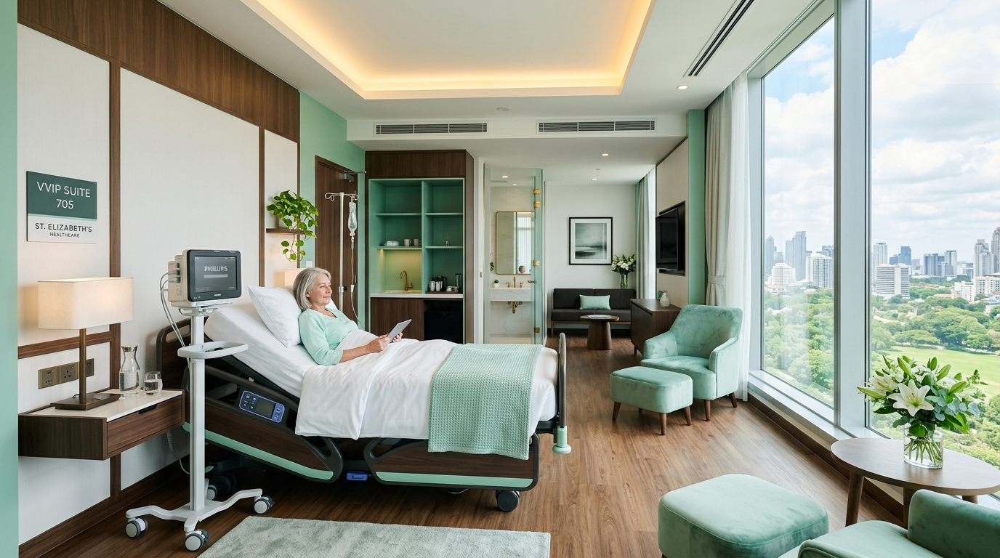

Instalasi Gawat Darurat (IGD 24/7)
Siap siaga 24 jam menangani kasus kondisi gawat darurat medis, trauma center, dan rujukan cepat armada ambulans.
Info Lengkap IGDRS Awal Bros Dumai menghadirkan pusat layanan medis terpadu berbasis teknologi modern, didukung oleh tim dokter spesialis ternama untuk kesehatan optimal Anda dan keluarga.
Dokter Spesialis
Tempat Tidur
IGD Siaga
Kepuasan Pasien

Cek ketersediaan spesialis
Pilihan kelas rawat inap
Panggilan ambulans cepat
Daftar tanpa perlu antre

RS Awal Bros Dumai didirikan untuk memenuhi kebutuhan masyarakat Kota Dumai dan sekitarnya akan layanan kesehatan berkualitas tinggi, terjangkau, dan aman. Kami memprioritaskan keselamatan pasien melalui penerapan standar medis internasional.
Fasilitas dan perawatan kesehatan terlengkap yang dirancang untuk mendukung pemulihan kesehatan Anda secara menyeluruh.
Siap siaga 24 jam menangani kasus kondisi gawat darurat medis, trauma center, dan rujukan cepat armada ambulans.
Info Lengkap IGDKonsultasi medis komprehensif bersama dokter spesialis senior dari berbagai bidang disiplin kesehatan.
Lihat Jadwal DokterPemeriksaan darah, patologi anatomi, CT-Scan 128 Slice, Radiologi Digital, dan USG 4D dengan hasil presisi.
Detail DiagnostikSeluruh kamar perawatan RS Awal Bros Dumai dirancang dengan mempertimbangkan privasi, keamanan, serta kenyamanan pasien dan keluarga penunggu.

Periksa Indeks Massa Tubuh (BMI) Anda secara instan untuk mengetahui rekomendasi kesehatan dasar.